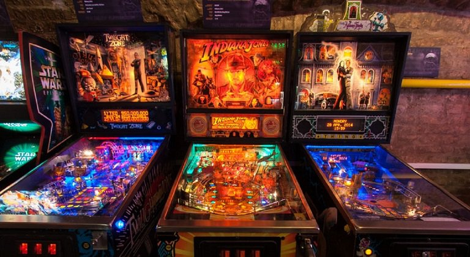
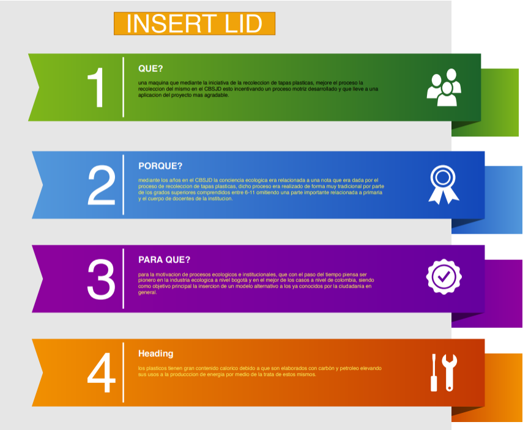

¿Que es Insert Lid?
Insert lid es una propuesta de reciclaje creativa, que busca mejorar los métodos arcaicos del reciclaje haciendo uso de la tecnología, en la cual sugiere un cambio en la forma en la que el reciclaje se ha venido efectuando.
Con lo que añade una investigación de la aplicación como propuesta en un espacio educativo, en el cual se efectúa el procedimiento de la investigación que va dirigida para el CBSJD (Colegio Bilingüe San Juan de Dios). por lo cual los resultados de la investigación aplicados en el CBSJD.
Explícitamente la idea principal es la implementación de una maquina árcade tipo Pinball, que por medio de la introducción de una tapa permite al usuario reciclar a la vez que juega. dando como incentivo el mismo tiempo de ocio y la conciencia del reciclaje.
 